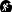
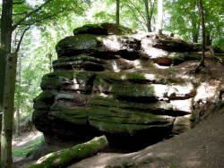

| Location: |
54540 Burg Pierre-Percée.
From Badonviller D182 towards Pierre-Percée, after 3.5 km parking lot La Vierge Clarisse on the left. 830 m/10 minutes hike marked with green rectangle. (48.4837085, 6.9487234) |
| Open: |
no restrictions. [2026] |
| Fee: |
free. [2026] |
| Classification: |
 Erosional Cave |
| Light: | bring torch |
| Dimension: | A=303 m asl. |
| Guided tours: | self guided |
| Photography: | allowed |
| Accessibility: | no |
| Bibliography: | |
| Address: | Grotte des Poilus, 54540 Burg Pierre-Percée, Tel: +33-. |
| As far as we know this information was accurate when it was published (see years in brackets), but may have changed since then. Please check rates and details directly with the companies in question if you need more recent info. |
|

Grotte des Poilus (Cave of the Trench Soldiers) is described as "conglomerate cave". The sandstone rock here has a very big variation in grain size between the different layers, so it is actually partly sandstone, partly conglomerate. The grains are really big, diameters up to 10 cm, in the back wall of the cave. This is a unique view and a rare type of cave. The hills here are full of caves, shelters, natural bridges like the Rocher de l'Arche (Arch Rock) and unique rock formations. And there are also numerous artificial structures, bunkers from World War I. The whole area is also a popular hiking area and all those sites are connected by hiking trails which are well signposted.
Most likely the name was given to this cave in 1914, during the First World War, when the converted into a first aid post. It was operated by the 43rd Territorial Infantry Regiment, which was stationed at La Chapelotte for four years. There is still an artificial pilar on one corner of the cave. It was probably added to stabilize the cave roof. However, the cave is obviously of natural origin. It seems one layer of the conglomerate is less stable than the layer above and below, erosion was faster, which created a sort of ledge.
The trail to the World War I structures starts at the Chapelle Cartier-Bresson at D992, there is also a parking lot. From there it’s a hike of 1.3 km to the cave. Shorter is the hike from parking lot La Vierge Clarisse on D182 between Badonviller and Pierre-Percée. It is a 830 m/10 minutes hike marked with green rectangle.